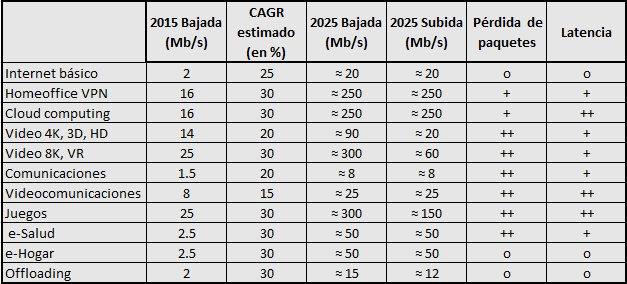
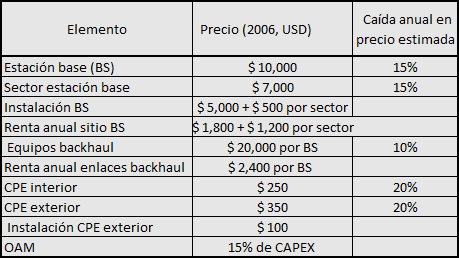
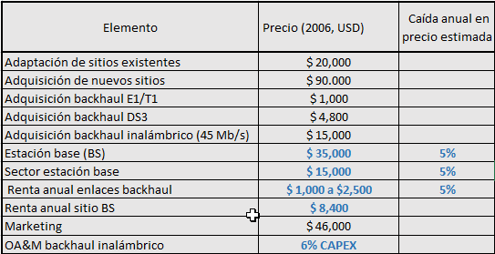
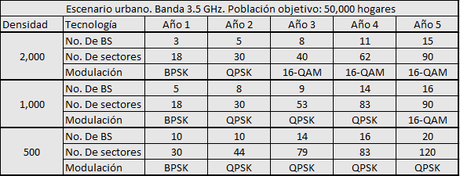
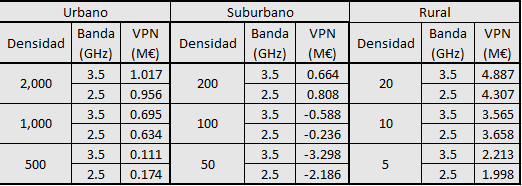

Capítulo 7 Análisis tecno-económico
7.1 Introducción
Los proyectos de TI en general, y de infraestructura de redes en particular, deben ser coherentes con los objetivos de negocio y poder justificarse en términos financieros o estratégicos.
La empresa tiene objetivos tácticos o duros, que son cuantificables (objetivos “SMART”), tales como reducir costos, aumentar la productividad, o reducir el tiempo de lanzamiento al mercado. También tiene objetivos estratégicos o suaves, los cuales son subjetivos y más difíciles de medir, como incrementar la eficiencia, obtener ventajas competitivas sostenibles y facilitar una reingeniería de procesos de negocio.
En cualquier caso, al final del día se busca que el dinero empleado para el proyecto (y que se obtiene de un préstamo, de las utilidades, o de aportaciones de los inversionistas), se utilice con el fin de maximizar el retorno de la inversión para los accionistas.
En este capítulo se hace una muy breve introducción a las métricas financieras básicas utilizadas para analizar y justificar proyectos en las organizaciones, utilizando ejemplos de proyectos de TI. Posteriormente se muestran los elementos a considerar al hacer un análisis tecno-económico de un proyecto de redes.
7.2 Métricas financieras
Las métricas financieras básicas para analizar inversiones en proyectos son las siguientes:
Costo total de propiedad (TCO, Total Cost of Ownership)
Periodo de recuperación (PBP, Pay Back Period)
Retorno de Inversión (ROI, Return On Investment)
Valor presente neto (NPV, Net Present Value)
Para proyectos específicos de TI algunas consultoras han propuesto métricas más especializadas, como Rapid Economic Justification (REJ), Total Value of Opportunity (TVO) y Total Economic Impact (TEI). Estas métricas rebasan el alcance del curso.
7.2.1 Costo total de propiedad
El costo total de propiedad (TCO) tiene por objeto considerar de manera explícita los costos incurridos durante TODO el ciclo de vida de la solución.
Cuando se tiene poca experiencia es común tomar en cuenta únicamente los costos de adquisición de las tecnologías involucradas (por ejemplo, la compra de equipo e infraestructura), pero el proyecto tiene costos a lo largo de toda su vida útil. Al menos se deben tomar en cuenta los costos de las fases que se muestran en la figura 7.1:
Figura 7.1: Fases en el ciclo de vida de un proyecto
Los costos de adquisición se incluyen en el indicador conocido como CAPEX (Capital Expenditures); los de operación, administración y mantenimiento (OA&M), en el OPEX Operational Expenditures).
A manera de ejemplo, podemos imaginar el costo total de poseer un automóvil. Además del costo de adquisición del auto (el CAPEX), debemos tomar en cuenta los costos de tenencia, mantenimiento, consumo de gasolina, seguros, estacionamiento, etcétera. En en un horizonte de tres años, estos costos pueden ser lo bastante onerosos como para no tomarlos en consideración.
En algunos proyectos el OPEX puede ser el factor dominante, al grado que en ocasiones TCO se interpreta como Total Cost of “Operation”. En otro tipo de proyectos, el factor dominante puede ser el CAPEX; para ellos a veces la métrica que se utiliza es TCA, Total Cost of Acquisition.
En proyectos de TI, como la adquisición de un ERP o un manejador de base de datos, el CAPEX suele representar entre 20% y 30% del costo total de operación en un horizonte de 3 a 5 años.
En la actualidad, con la gran penetración del cómputo en la nube (cloud computing) estos términos se han puesto de moda, pues con la provisión de servicios de TI en la nube se reduce drásticamente el CAPEX (se dejan de comprar servidores, infraestructura de soporte) y se aumenta el OPEX (se paga regularmente el arrendamiento de los servidores virtuales).
Dado que en el despliegue de grandes redes de comunicaciones los costos de implementación iniciales pueden ser muy grandes, en este tipo de proyectos suelen especificarse de forma aislada como IMPEX, Implementation Expenditures. Aquí se incluyen costos como la adquisición del terreno, obra civil para instalaciones y levantamiento de la torre, el equipo de la estación base y antenas, etcétera).
Para calcular el TCO se deben incluir todos los elementos que puedan identificarse, como:
Hardware (servidores, instalación, configuración, planeación, modificaciones a la infraestructura existente, ...)
Software (adquisición, licencias, configuración, mantenimiento, adaptaciones, costos de estabilización, ...)
Capital humano (nuevo personal, capacitación, apoyo para instalación, gestión del cambio, ...)
Indirectos (arrendamiento del local y de los equipos, luz, probabilidad e impacto de fallos, ...)
No es extraño que se aumente un margen (entre 10% y 30%) al TCO para incluir costos adicionales que no han sido claramente identificados.
Ejemplo 7.1 19 Se tienen tres alternativas para desplegar una red local: una red cableada (LAN); una red inalámbrica convencional basada en puntos de acceso (AP, Access Point) robustos distribuidos en las instalaciones (WLAN) y una red inalámbrica basada en un conmutador inteligente y puntos de acceso muy simples (repetidores) distribuidos en las instalaciones (Sw-WLAN).
El conmutador en la última opción, es muy poderoso e incorpora, de forma centralizada, muchas de las funcionalidades que se espera encontrar en un AP, como control de acceso, configuración de VLANs, asiganción dinámica de IPs, gestión de potencia de portadoras, etc. Sin embargo, es un equipo muy costoso; en cambio, los APs para esta red son muy sencillos y económicos.
El ambiente en el que se desplegará la red incluye 100 puestos de trabajo (100 computadoras) y es muy dinámico; se ha estimado que durante un año, alrededor del 30% de los puestos de trabajo deben re-ubicarse. Si durante esta reubicacion se pierde conectividad con la red, ese puesto de trabajo tendrá una pérdida de productividad estimada en $50 USD por año 20.
Las computadoras en los puestos de trabajo incluyen una tarjeta de red cableada; si se desea desplegar una red inalámbrica, se deben adquirir nuevas tarjetas de red. Las siguientes tablas muestra los costos que se toman en cuenta para este ejemplo:
| Red Alambrada | |
|---|---|
| Computadoras | 100 |
| Tarjeta de red | $0 |
| Costo del conmutador por puerto | $20 |
| Instalación por puerto | $400 |
| Reinstalación por puerto | $200 |
| Porcentaje de reubicación por año | 30% |
| Pérdida de productividad | $50 |
| Herramientas de administración | $4,000 |
| OA&M y licencias por año | $200 |
| WLAN | Sw-WLAN | |
|---|---|---|
| APs | 20 | 20 |
| Costo AP | $300 | $100 |
| Instalación AP | $250 | $250 |
| Tarjeta de red | $75 | $75 |
| Conmutador | $0 | $10,000 |
| Herramientas de administración | $4,000 | $2,000 |
| Herramientas Ctl. acceso | $5,000 | $2,500 |
| OA&M y licencias por AP por año | $250 | $150 |
| Gestión de radio frecuencia por AP por año | $200 | $50 |
Los costos de adquisición de las tres alternativas son los siguientes: \[\begin{aligned} \text{LAN} : & (100)(\$20)+ (100)(\$400) + \$4,000 = \$46,000\\ \text{WLAN}: & (20)(\$300)+(20)(\$250)+(100)(\$75)+\$0+\$4,000+\$5,000=\$27,500\\ \text{Sw-WLAN}: & (20)(\$100)+(20)(\$250)+(100)(\$75)+\$10,000+\$2,000+\$2,500=\$29,000 \end{aligned}\]
Considerando el CAPEX, parecería que la opción de la red local inalámbrica convencional es la más atractiva, y es que el costo del conmutador en la Sw-WLAN es muy elevado.
Los gastos de instalación en la red cableada son muy altos, pues suponen el tendido de canaletas y cables a lo largo de la empresa. En un edificio con cableado estructurado, estos costos disminuirían considerablemente.
Veamos ahora los costos de operación, administración y mantenimiento (OA&M) por año: \[\begin{aligned} \text{LAN} : & (0.3)(100)(\$200)+ (0.3)(100)(\$50) + (100)(\$200) = \$27,500\\ \text{WLAN}:& (0.3)(100)(\$0) +(20)(\$250)+(20)(\$200) = \$9,000\\ \text{Sw-WLAN}:&(0.3)(100)(\$0)+(20)(\$150)+(20)(\$50) = \$4,000\\ \end{aligned}\]
El OPEX anual de la red local con conmutador inteligente es menos de la mitad que el de la red inalámbrica convencional; las funcionalidades del conmutador empiezan a rendir frutos. Los dos son mucho menores a los de la red cableada porque en la reconfiguración de puestos no se requiere de reinstalaciones y no hay pérdida de productividad.
El costo total de operación a tres años, es mucho más favorable para la red inalámbrica basada en conmutador inteligente:
\[\begin{aligned} \text{LAN} : TCO =& \$46,000+3(\$ 9,000) = \$128,500\\ \text{WLAN}: TCO = &\$27,500 + 3(\$9,000) = \$54,500\\ \text{Sw-WLAN}:TCO =&\$29,000 + 3(\$4,000) = \$41,000\\ \end{aligned}\]
Una de las mayores dificultades para calcular el TCO en el despliegue de redes de telecomunicaciones, es que los costos pueden variar enormemente de una región a otra, y de un año a otro. Son mercados sumamente dinámicos.
Las siguientes cifras se presentan únicamente como referencia para tener una idea muy somera de los costos de despliegue de este tipo de redes:
Despliegues de redes WiFi municipales en Estados Unidos. Si la red contempla únicamente servicios no públicos (servicios municipales) se estimaba que el OPEX era de 15% del CAPEX por AP por año. Si la red ofrecía servicios públicos el OPEX se duplicaba pues se deben incluir costos de servicio a cliente, tarificación y marketing, entre otros.
En algunas redes municipales el OPEX total fue 10 veces superior al CAPEX en un horizonte de 5 años.
El arrendamiento de luminarias para instalar los APs variaba enormemente de un municipio a otro: En Louisiana costaba $86 USD por poste por año, mientras que en California el costo era de $36.
Los AP con calidad comercial para despliegues a la intemperie con un solo radio, gastaban $20 USD de energía eléctrica por año; los AP con dos radios (ideales para despliegues de mallas WiFi municipales) gastan cinco veces más: $100 USD por año.
Para despliegues de fibra al hogar (FTTH) en Canadá, se estimó un OPEX de 5% del CAPEX por nodo.
La figura 7.2 muestran los porcentajes de los rubros más importantes en CAPEX y OPEX para el despliegue de una estación base de telefonía celular en Estados Unidos a principios de este milenio.
Figura 7.2: Elementos que conforman el CAPEX y OPEX para el despliegue de una radio base
Recordemos que estas cifras son únicamente un referente y que hay grandes variaciones dependiendo del contexto. Por ejemplo, en un país grande, el equipo de la red dorsal representa 30% del CAPEX, mientras que en uno pequeño, es sólo el 10%. Sin embargo, la adaptación de los sitios en el primer caso cubren el 30% del CAPEX, pero en los países pequeños puede ascender hasta 50%.
Es interesante observar que los costos relacionados con los equipos de telecomunicaciones no son dominantes ni en CAPEX ni en OPEX, y, de hecho, la tendencia es que estos costos disminuyan con el teimpo.
En México, en áreas rurales, el costo de interconexión era en promedio el doble que la figura anterior (18%), pero en algunas regiones podía alcanzar hasta el 70%, debido a la enorme variación en los costos de los enlaces dedicados: Un enlace E1 podía costar de $15 a $15,000 USD mensuales. Estas variaciones explican buena parte de la gran variación en cobertura celular que tenía México, donde todavía hay un porcentaje sustancial de comunidades no atendidas y subatendidas.
Para tener una idea general de los costos de implementación, figura 7.3 muestra la distribución de costos para despliegues de redes LTE en un país nórdico en 2012.
Figura 7.3: Distribución de CAPEX, OPEX, IMPEX para redes LTE en un país nórdico
Sorprende la gran diferencia en TCO entre despliegues basados en macro-celdas (120,000 €) y micro-celdas (22,000 €). En el despliegue de micro-celdas, el componente más importante del OPEX es la interconexión entre celdas (backhaul) porque se deben desplegar muchas más celdas para la misma zona.
Terminamos esta sección resaltando algunas características del TCO:
Es muy conocido desde que la consultora Gartner lo empezó a utilizar en la industria de TI a finales de los años 80.
Es el punto de partida de casi todos los estudios de rentabilidad
Es muy útil para comparar proyectos alternativos equiparables. Sin embargo, no debemos olvidar que el objetivo de un proyecto es maximizar la rentabilidad de una inversión, no minimizar los costos.
El TCO no toma en cuenta el costo del capital. Esto es un riesgo financiero importante para proyectos de alto costo y tiempo.
7.2.2 Retorno de inversión
El Retorno de inversión (ROI) es una técnica muy popular para estimar las consecuencias financieras al hacer una inversión o implementar un proyecto.
En su forma más simple, el ROI es el resultado de dividir los beneficios netos entre el costo de la inversión, expresado en porcentaje.
\[\text{ROI} = \frac{(\text{Beneficios}-\text{Costos}}{\text{Costos}}\times 100 %\]
Es una métrica muy popular que permite comparar la tasa de retorno esperada de un proyecto, contra otro tipo de inversión de capital, como puede ser un portafolio de inversión. Esta métrica debe considerar un horizonte de tiempo. Para proyectos de TI, este horizonte suele ser de 3 a 5 años.
Con frecuencia se utiliza para comparar la tasa de retorno del proyecto contra otro tipo de inversión de capital; por ejemplo, decidir adquirir un nuevo servidor, o invertir el dinero en un instrumento financiero.
Para calcular el ROI se deben tratar de identificar todos los beneficios y costos del proyecto. Para el cálculo de costos, se deben incorporar las reflexiones presentadas en el análisis del TCO.
La estimación de los beneficios se complica porque existen distintos tipos de beneficios, como tangibles, estratégicos y algunos, como los financieros, pueden cambiar en función de las políticas económicas de un país. Un buen punto de partida (y un gran reto en muchas empresas), es tratar de identificar los llamados KPI,Key Performance Indicators.
Estos son algunos ejemplos de beneficios a considerar cuando se calcula el ROI:
- Beneficios cuantificables (hard)
-
: Reducción en el ancho de banda en los accesos a Internet; consolidación de servidores físicos; reducción en los tiempos de procesamiento y en los tiempos de lanzamiento al mercado de una nueva aplicación;
- Beneficios cualitativos (soft)
-
: Mejora la productividad y eficiencia de los empleados; mejora el ambiente laboral; aumenta la fidelización de los clientes; mejora la reputación de la marca
- Beneficios en ingresos
-
: Aumento de la producción; mayor participación de mercado; Incremento en el ingreso medio por cliente (ARPU, Average Revenue Per User)
Los beneficios cualitativos se les llama soft porque no pueden convertirse directamente en un valor económico. Por ejemplo, el aumento en la productividad de un empleado no necesariamente implica una aumento en la producción ni una reducción en el número de empleados. En general, se debe recurrir a profesionales de otras áreas (por ejemplo, al director de RH, de marketing, de operaciones) para que ayuden a convertir estos beneficios en términos cuantitativos.
Al estimar el horizonte de tiempo para el cálculo del ROI también deben tomarse en consideración los cambios (realistas) esperados durante ese tiempo, como pueden ser el incremento en ingresos (por ejemplo, por una mayor captación de clientes) y en gastos (por ejemplo, por un aumento en los recursos asignados a los centros de atención a clientes).
Por ello, aunque se recomiendan horizontes de tiempo de tres a cinco años para proyectos de TI, en ocasiones el ROI se calcula para dos o tres años. Una excepción notable es el cálculo de ROI para redes de comunicaciones. Las inversiones iniciales suelen ser tan grandes, que los proyectos no son rentables antes de 7 o 10 años; en estos casos, los cálculos consideran horizontes de tiempo de 10, 15 o 20 años.
Ejemplo 7.2 Una empresa está considerando implementar un CRM con el que espera tener una interacción mucho más fluida con sus clientes. A través de esta interacción estima que tendrá una gran fidelización (una tasa de abandono, CHURN, menor) y la oportunidad de lanzar más y mejorses servicios al mercado en menos tiempo.
Al analizar el proyecto con las distintas unidades de negocio, se encontraron los siguientes beneficios. Observe que casi todos están expresados como una reducción en costos y que se está haciendo una estimación de mejoras a lo largo del tiempo gracias a la implementación del CRM.
| Beneficios (Millones USD) | Año 1 | Año 2 | Año 3 |
|---|---|---|---|
| Reduce costos de transacción | $ 2.50 | $ 3.00 | $ 3.20 |
| Reduce costos de operación | $ 0.80 | $ 1.00 | $ 1.10 |
| Reduce costos de TI | – | $ 1.50 | $ 1.50 |
| Reduce CHURN | $ 3.50 | $ 4.00 | $ 5.00 |
| Reduce time to market | – | $ 2.50 | $ 2.50 |
| TOTAL: | $ 6.80 | $ 12.00 | $ 13.30 |
La empresa espera un beneficio total \(\$ 6.80 + \$ 12.00 + \$ 13.30 = \textbf{\$ 32.10}\) en los tres años calculados.
En la siguiente tabla se presenta la estimación de los principales gastos incurridos al implementar el CRM. Observe que el gasto más importante se da en el primer año, que es el más intensivo en el desarrollo del producto. En los años subsecuentes, los desarrollos están limitados a actualizaciones y aumento de funcionalidades.
| Costos (Millones USD) | Año 1 | Año 2 | Año 3 |
|---|---|---|---|
| Licencias | $ 1.00 | $ 1.00 | $ 1.00 |
| Desarrollo y TQM | $ 2.50 | $ 0.20 | $ 0.20 |
| Mantenimiento | $ 0.70 | $ 0.20 | $ 0.20 |
| TOTAL: | $ 4.20 | $ 1.40 | $ 1.40 |
Los costos totales para el proyecto durante los tres años, se estiman en \(\$ 4.20 + \$ 1.40 + \$ 1.40 = \textbf{\$ 7.00}\). Con una inversión de $ 7 MUSD se espera un beneficio de $ 32.10.
Los retornos de inversión para el primer año, para el tiempo de vida del proyecto, y el anual estimado, son los siguientes:
\[\begin{aligned} \text{ROI primer año} &= \frac{6.8 - 4.2}{4.2}\times 100\% = 62\%\\ \text{ROI tres años} &= \frac{32.1 - 7}{7}\times 100\% = 358\%\\ \text{ROI anualizado} &= (1+3.58)^{1/3} - 1 = 66\%\\ \end{aligned}\]
El Periodo de recuperación (PBP) es el tiempo en que se recupera la inversión. Con mucha frecuencia se suele considerar únicamente la inversión inicial (el CAPEX), pero debe tomarse en cuenta que se hacen inversiones a lo largo del tiempo de vida del proyecto, por lo que el cálculo del PBP debe considerarse en ese horizonte de tiempo.
Para el ejemplo anterior, el periodo de recuperación es: \[PBP = \frac{\text{costo total}}{\text{beneficio en el tiempo}} = \frac{7}{\frac{32.1}{36}} \approx 7.8\,\text{meses}\]
Como se ha comentado, en el despliegue de redes de comunicaciones, las inversiones iniciales pueden ser muy considerables, por lo que no es de extrañar que el PBP sea muy grande, mayor a siete años.
Regresando al ROI, una de sus complicaciones es determinar si la erogación que se hace es un gasto o una inversión, y, de hecho, en ocasiones ésto se depende de las políticas fiscales del país.
En el ejemplo anterior, los costos que se tomaron en cuenta son costos de operación y se consideran un gasto. En el siguiente ejemplo, el costo que se tomará en cuenta es el adquisición de un equipo, que en estricto sentido, debe depreciarse anualmente. Sin embargo, para enfatizar la complejidad en el cálculo del ROI, se considera que este equipo es un activo (como la compra de un edificio, o una inversión bancaria), por lo que su "valor" puede ser recuperado con la reventa del equipo.
Ejemplo 7.3 Una empresa está considerando adquirir un dispositivo SD-WAN (Software defined WAN) que le permitirá optimizar sus enlaces WAN al consolidar el tráfico de voz y datos y redistribuir el tráfico entre distintos enlaces para optimizar el balanceo de cargas.
Este ejemplo tiene enfatiza dos características frecuentes en el cálculo del ROI: (1) Los beneficios se derivan al comparar el modo actual de operación (PMO, Present Mode of Operation), y (2) casos en que los "gastos" pueden ser considerados inversiones en activos.
Los costos de la red WAN en el modo actual de operación se presentan en la siguiente tabla:
| Costos (Miles USD) | Año 1 | Año 2 | Año 3 |
|---|---|---|---|
| Enlaces WAN | $ 1,000 | $ 1,100 | $ 1,250 |
| Recursos humanos | $ 200 | $ 200 | $ 250 |
| TOTAL: | $ 1,200 | $ 1,300 | $ 1,500 |
| Total acumulado: | $ 1,200 | $ 2,500 | $ 4,000 |
Los costos de la red WAN con el equipo SD-WAN son los siguientes:
| Costos (Miles USD) | Año 1 | Año 2 | Año 3 |
|---|---|---|---|
| Enlaces WAN | $ 750 | $ 775 | $ 825 |
| Recursos humanos | $ 200 | $ 200 | $ 250 |
| Equipo SD-WAN | $ 500 | ||
| TOTAL: | $ 1,450 | $ 975 | $ 1,075 |
| Total acumulado: | $ 1,450 | $ 2,425 | $ 3,500 |
Estamos ahorrando \(\$ 4,000-\$ 3,500 = \$ 500\). Para ello invertimos (y aún tenemos) \(\$ 500\), por lo que el retorno es:
\[\begin{aligned} \text{ROI tres años} &= \frac{(500+500) - 500}{500}\times 100\% = 100\%\\ \text{ROI anualizado} &= (1+1)^{1/3} - 1 = 26\%\\[1ex] \text{PBP} & = \frac{500}{\frac{1000}{36}} = 18\,\text{meses} \end{aligned}\]
Estas son algunas recomendaciones básicas relacionadas con el ROI:
Se debe crear lista de métricas (KPI) relacionadas con la estrategia del negocio, como atención a clientes; productividad y competitividad; eficiencia operativa. Se debe evaluar cómo el proyecto impacta estas métricas, y eso requiere de expertos (no sesgados y no afectados por el proyecto) en las demás unidades de negocio.
Se debe desarrollar la metodología en términos financieros y con apoyo del área de finanzas. Un análisis de ROI adecuado difícilmente uede salir del área de TI y de telecomunicaciones.
Se deben establecer beneficios que puedan ser claramente medibles (SMART). Los beneficios “soft” deben verse como deseables, o bien, deben ser cuantificables (de forma convincente) por las áreas de negocio correspondientes
Se deben privilegiar proyectos en los que los beneficios se reflejen lo más pronto posible (con PBP corto); de lo contrario, se debe tomar en cuenta los gastos financieros del dinero apalancado (los gastos de tesorería).
A pesar de su gran popularidad, el ROI tiene algunas limitaciones que deben tomarse en cuenta; entre las más importantes están:
No se toma en cuenta el costo del capital, lo cual puede ser muy delicado en proyectos con un PBP muy grande. Frecuentemente se calcula ROI ajustando a valor presente neto. A esto se le conoce como RA-ROI (Risk adjusted ROI).
Al reportarse en porcentaje, no considera que los beneficios netos podrían ser muy bajos para justificar la inversión. Por ejemplo, una inversión de $100,000 que genera un beneficio de 5,000 tiene un ROI de 5%, mientras que una inversión con un ROI de 20% puede ser una inversión $ 10 que genera un beneficio de $ 2.
De forma similar, el ROI oculta los flujos de capital requeridos. Específicamente, para grandes proyectos, los costos de inversión iniciales pueden ser tan altos, que hagan al proyecto inviable aún si el ROI parece atractivo.
7.2.3 Valor Presente Neto
El valor presente neto, NPV, es una medida del beneficio que genera una inversión durante su vida útil considerando el valor del dinero. Se define como el valor presente de los ingresos futuros menos el valor presente del flujo de costos futuros.
En términos simples, podemos entender "valor presente" considerando que un peso hoy tiene y se percibe como más valioso que un peso en el futuro. Entre muchos otros factores, además de la pérdida de valor por inflación, se deben tomar en cuenta factores como el costo de oportunidad, es decir, la incapacidad de tomar otras decisiones de inversión si ese peso no se tiene disponible.
Para calcular el valor presente, se utiliza una tasa de descuento \(r\) que busca ser un indicador del riesgo financiero que la empresa atribuye a los factores anteriores. La fórmula de NPV es la siguiente:
\[NPV=\sum\limits_{t=0}^T\frac{C_t}{(1+r)^t},\]
donde \(t\) es el periodo en años, \(r\) es la tasa de descuento y \(C_t\) es el ingreso neto (es decir, ingresos menos egresos) en el año \(t\).
Ejemplo 7.4 En la siguiente tabla se muestran dos opciones para invertir $ 1,000,000. La primera es para un proyecto a cinco años con ingresos netos de $500,000 cada año. La segunda es para un proyecto a tres años con ingresos netos variables.
| Opción 1 | Opción 2 | |||
|---|---|---|---|---|
| Año | Ingreso neto | Ajustado | Ingreso neto | Ajustado |
| 0 | ($ 1,000,000) | ($ 1,000,000) | ($ 1,000,000) | ($ 1,000,000) |
| 1 | $ 500,000 | $ 454,500 | $ 1,000,000 | $ 909,000 |
| 2 | $ 500,000 | $ 413,000 | $ 750,000 | $ 619,500 |
| 3 | $ 500,000 | $ 375,500 | $ 500,000 | $ 375,500 |
| 4 | $ 500,000 | $ 341,500 | ||
| 5 | $ 500,000 | $ 310,500 | ||
| Total: | $ 1,500,000 | $ 895,000 | $ 1,250,000 | $ 904,000 |
En las columnas 2 y 4 se presentan los resultados netos de las dos opciones. Aparentemente la primer opción es más atractiva pues reporta un beneficio neto $250,000 mayor al de la segunda.
Sin embargo, al hacer el ajuste a valor presente con una tasa de descuento de 10%, la segunda opción es la más rentable.
Para poder determinar los ingresos netos anuales, se deben estimar los flujos de capital. Para proyectos con fuertes inversiones iniciales como el despliegue de una red de comunicaciones, la curva de flujos de capital sería similar a la de la figura @ref(fig:cashflow9:
Figura 7.4: Ejemplo de una curva de flujo de capital
En términos generales, los proyectos con \(NPV < 0\) deben rechazarse y aquellos con \(NPV \ge 0\) deben analizarse más detenidamente.
Por otra parte, como debió quedar claro en el ejemplo, los resultados de NPV dependen de la tasa de descuento utilizada. Es muy importante elegir un valor con objetividad y justificarlo. No es raro encontrar tomadores de decisiones que estarán inclinados a definir una tasa de descuento "conveniente".
Finalmente, todos los proyectos de largo plazo deben incluir un factor de riesgo adicional para tomar en consideración la manifestación de eventos ajenos al proyecto que pueden tener un gran impacto en el mismo. Por ejemplo, la aparición de nuevos jugadores disruptores, factores macro-económicos, cambios en las prioridades del Estado y otros factores externos, pueden parecer improbables en el corto plazo, pero factibles en un escenario de 15 años.
7.3 Análisis tecno-económico
En otras secciones del curso se ha hablado sobre cientos de proyectos de redes WiFi municipales desplegadas los Estados Unidos y en otros países en los últimos años. Cuando estas redes se pensaron para ofrecer, además de servicios municipales, servicios públicos de acceso a Internet, la gran mayoría de estos proyectos fracasó, pero estas experiencias dejaron muchas lecciones que han contribuido a fortalecer las metodologías de diseño de redes.
Un ejemplo de estas lecciones es el marco propuesto por Mandviwalla (2008) para el despliegue de redes inalámbricas municipales (WMN, Wireless Municipal Networks). Se trata de un marco compuesto por tres fases; si en alguna de ellas los elementos no están claramente definidos o si cuestiona la viabilidad de la red, el proyecto debería abandonarse. El marco propuesto es el siguiente. Observe la gran semejanza de este marco con la metodología de diseño descendente que hemos seguido a lo largo del curso.
Fase 1
Objetivos Los objetivos de la red deben ser claramente identificados. Para redes WSN éstos pueden ser disminuir la brecha digital, ofrecer mejores servicios municipales, reducir los costos de operación de redes actuales, incrementar la atractividad de la región, empoderar a los ciudadanos, etcétera.
Actores clave Los objetivos deben estar asociados a cubrir las necesidades de actores clave como ciudadanos, turistas, empleados de gobierno. Se debe considerar también quiénes se verían perjudicados (por ejemplo, competidores comerciales, proyectos a los cuales se les recortaría presupuesto para financiar la red).
Políticas y regulaciones Es muy importante tomar en consideración las restricciones de política pública y regulatorias en el diseño de estas redes. En algunos casos, estas redes pueden ser vistas como competencia desleal. Para ello, la Unión Europea ha definido criterios en los que se fomenta el despliegue de redes públicas municipales (las llamadas zonas blancas) o en los que éstas se prohíben (las zonas negras). En esta fase también se analizan las implicaciones legales sobre seguridad (si ésta es comprometida), niveles de servicio, atención a clientes, entre otros.
Fase 2
Servicios y aplicaciones Con los resultados de la primera fase, se pueden definir los servicios y aplicaciones que ofrecerá la red. Para ello deben priorizarse los objetivos identificados,en función de los actores clave y de las restricciones detectadas.
Selección de tecnología Ya se cuenta con todos los elementos necesarios para proceder a un primer diseño, similar al diseño conceptual en la metodología de diseño descendente. En esta etapa no se trata de la selección de tecnologías específicas (lo que llamamos diseño físico) sino de consideraciones más generales, como bandas de frecuencia para los servicios WiFi y para el backhaul, gateways para conexión a la red dorsal, infraestructura municipal disponible para desplegar la red, entre otros.
Finanzas y gestión Esta etapa es crítica. Se debe tener un sólido estudio de factibilidad económica no sólo para desplegar la red (el CAPEX) sino para garantizar su operación (el OPEX) de forma sustentable. Se debe si los servicios ofrecidos son gratuitos (todos ellos, o sólo algunos), si la red puede ser financiada con modelos publicitarios, o si los ahorros por el uso de nuevas tecnologías son suficientes para desplegar la red. En este capítulo conoceremos los conceptos básicos necesarios para realizar este tipo de análisis financiero.
- Fase 3
-
Si las etapas anteriores dan viabilidad al proyecto, se puede proceder al diseño detallado (diseño lógico y físico) y al eventual despliegue de la red.
7.3.1 Análisis de rentabilidad
Para evaluar la viabilidad financiera del proyecto, se debe hacer un análisis de rentabilidad. La Unión Europea ha financiado varios proyectos marco (Titan, TONIC, EcoSys) de donde se derivan las principales líneas de esta sección. Para contextualizar el análisis, utilizaremos ejemplos del entorno mexicano.
Un análisis de rentabilidad tiene los siguientes pasos:
Se define el periodo de tiempo en el que el proyecto (la red a desplegar) estará vigente
Se realiza el análisis del mercado y la definición de los servicios a ofrecer. Estos dos pasos permiten hacer una estimación de la demanda
Se analizan los aspectos relacionados con el despliegue y operación de la red (la estimación de la oferta), tales como:
Características tecnológicas de la red
Estimación de costos: De adquisición, operación, mantenimiento, licenciamiento, etcétera
Se determinan los parámetros financieros del entorno en el que se desplegará la red, tales como tasas de interés, tasa de descuento, políticas fiscales para depreciación y valoración de activos, impuestos a pagar, estímulos fiscales, etcétera Se hace el análisis de los resultados financieros, como los análisis de sensibilidad y de riesgo financiero
Consideraciones de Riesgos
Como se ha mencionado en múltiples ocasiones, los proyectos de despliegue de redes de comunicaciones requieren de grandes inversiones y se espera que duren muchos años. En ambos casos, se entra en zonas de incertidumbre no despreciable para elementos clave del proyecto.
En ejemplo, es la capacidad de estimar la demanda de servicios y de anchos de banda requeridos en el corto, mediano y largo plazo. A principios del siglo XXI, arrastrados por la burbuja de las startups "dot com", muchos de los grandes operadores de telecomunicaciones tuvieron pérdidas millonarias al ser excesivamente optimistas en la demanda esperada de servicios y desplegar redes sobre-dimensionadas, con capacidades que sencillamente excedían por mucho las necesidades de sus clientes. En cambio, con la aparición de las tabletas y los teléfonos inteligentes, muchas redes celulares se vieron en la necesidad de hacer inversiones no planeadas, para poder crecer la capacidad de sus redes.
En proyectos de largo plazo tampoco es posible estimar con precisión las dinámicas de competencia entre operadores, la aparición de nuevos jugadores y modelos de negocio, como tampoco se puede estimar cómo evolucionará la tecnología y los costos asociados a ella.
Para protegerse en cierta medida de estas fuentes de incertidumbre, es común agregar al análisis de valor presente neto, un factor de riesgo o risk penalty que va de cero (para organizaciones aversas al riesgo) a uno (para organizaciones que son tomadoras de riesgo.
En el análisis de riesgos se suele considerar distintos escenarios, que se interpretan como posibles rutas de evolución de aspectos relevantes del proyecto. Éstos se presentan frecuentemente como tres rutas: El escenario tendencial, el cual considera que las condiciones actuales no cambiarán sustancialmente; el pesimista, en el que varios de los riesgos se materializan (por ejemplo, que en las comunidades rurales se acentúen los fenómenos de migración); y el optimista, en el que los factores clave del proyecto (como la penetración de mercado) evolucionan favorablemente.
El diseño de escenarios deberá incluir al menos los cuatro elementos que se muestran a continuación:
Regulatorio Entorno que favorezca las condiciones de competencia, de fomento a la competencia y de protección a inversionistas: Número de competidores en los mercados de redes y servicios; participación de mercado de cada uno (índice HHI).
Ambiente Densidad de clientes potenciales en el área de cobertura; nivel socio-económico; porcentaje de ingresos dedicado a telecomunicaciones; espacios disponibles para despliegue de infraestructura; costos de arrendamiento, trámite de permisos, obra civil
Servicios Tipo de servicios demandados y potencialemnte demandados; tasas de penetración; niveles de alfabetización digital; tarifas de suscripción; modelos de negocio
Tecnologías Tecnologías disponibles; rutas esperadas de evolución tecnológica; costo de equipos de telecomunicaciones; de soporte y de usuario final; costos OA&M
De mercado Un elemento esencial en los estudios de rentabilidad. Por supuesto, se debe identificar con la mayor precisión posible a qué población va dirigido el producto o servicio que se está deseando introducir al mercado. En redes de comunicaciones, podemos identificar varios segmentos de mercado con necesidades y patrones de consumo diferenciados. Tres segmentos típicos son:
El mercado residencial. Más orientado a consumo de contenidos, y por tanto, justifica la provisión de redes de acceso con velocidades asimétricas. Los periodos de máximo consumo en el sector residencial son de 19:00 a 22:00 horas.
El mercado corporativo. Es un mercado en el que las aplicaciones de misión crítica pueden depender de la disponibilidad de la red, por lo la red debe garantizar niveles de servicio (SLA) rigurosos. En este mercado también suele requerirse de un alto nivel de privacidad y seguridad, así como de tecnologías avanzadas, como VPNs y enlaces MPLS.
Pequeña y mediana empresa. Es un mercado que también demandará niveles de servicio y funcionalidades de red avanzadas, pero no tan rigurosas como las de los mercados corporativos. En cambio, es un mercado mucho mayor que el corporativo.
Habiendo identificado los segmentos de mercado, deberá definirse su volumen. Para una zona de cobertura determinada, cuántos hogares habrá, cuántas unidades productivas pequeñas y medianas? es una zona donde existe alta densidad de corporativos? No basta con responder a estas preguntas con los datos presentes; en la medida de lo posible, se debe analizar el crecimiento (o decrecimiento) esperado, pues lo que se busca es estimar el número potencial de suscriptores a lo largo del tiempo de vida del proyecto.
Estas cifras son las que definen las características demográficas de la región y distintos países las clasifican de distintas maneras. Por ejemplo, en Australia, un área urbana es aquella que tiene más de 200 habitantes por kilómetro cuadrado, mientras que en Canadá, el término se aplica para localidades con más de 400 habitantes por kilómetro cuadrado. Se trata de dos países con territorios muy grandes y con una densidad de población relativamente baja.
Ejemplo 7.5 En México, la clasificación oficial y el porcentaje de población en cada categoría de acuerdo al censo 2008 del Instituto Nacional de Geografía y Estadística es la siguiente:
| \(\text{Habitantes}/\text{km}^2\) | Porcentaje | |
|---|---|---|
| Alta densidad | 12,000 | 26.4% |
| Densa | 6,000 | 21% |
| Urbana | 1,000 | 7% |
| Suburbana | 250 | 1.9% |
| Semi rural | 125 | 13.7% |
| Rural | 30 | 8.2% |
| Aislada | 12 | 17.7% |
La Ciudad de México, con \(5,800\,\text{hab}/\text{km}^2\), es considerada en su conjunto como zona densa, pero si se eliminan las Alcaldías de Xochimilco y Milpa Alta, se trata de una zona de alta densidad.
Además de los datos demográficos, el estudio de mercado debe contemplar el nivel socio-económico de los segmentos de mercado pues esto ayuda a determinar la capacidad de compra de los suscriptores, el tipo de servicios que potencialmente estarían demandando, las características de los equipos terminales que debieran ofrecerse, etcétera.
Ejemplo 7.6 Potencial de mercado en México
De acuerdo a la encuesta ENDUTIH 2017, en México había 71.3 millones de usuarios de Internet pero muchos de ellos no son usuarios regulares. Más importante aún, se tenían al menos 40.4 millones de ciudadanos sin acceso a Internet.
En Estados como Baja California, Sonora y la Ciudad de México, el porcentaje de usuarios de internet rebasa el 77%, pero en Guerrero, Oaxaca y Chiapas, el porcentaje es menor a 50%. A nivel nacional, sólo el 39% de la pobalción rural tiene acceso a Internet.
Por nivel socio-económico, 78% del quartil más alto accede a Internet; el porcentaje baja a 34% en el quartil más bajo de la población
El porcentaje de hogares con acceso a Internet en zonas urbanas era ligeramente inferior al 50%, pero zonas rurales no llegaba al 10%, lo que nos coloca muy por debajo de países como Uruguay, Costa Rica y Chile en América Latina.
De acuerdo a México Evalúa, sólo el 26% de las escuelas tenía acceso a Internet en ese año.
Es una priodidad de la Administración actual abatir estas brechas de acceso (y uso, y apropiación) a Internet.
Sin embargo, la demanda depende de la capacidad para poder pagar los servicios de telecomunicaciones. En 2006, el gasto promedio por hogar en servicios de TIC en los países de la OCDE, era de 2.3% de sus ingresos, mientras que en México oscilaba entre el 3% y el 6%.
Martin Hilbert, un investigador muy reconocido en temas de brecha digital, considera que el umbral en el que las TIC transitan de ser un bien necesario a un bien de lujo, es de 10 USD por persona por mes. Con estas cifras, más de 15 millones de mexicanos jamás podrán acceder a Internet.
Otro elemento a considerar en el análisis de mercado, son las tasas de adopción tecnológica, pues ellas ayudan a tener un referente de los flujos de ingresos esperados, y de los puntos donde el mercado puede empezar a presentar condiciones de saturación. En la figura 7.5, la imagen de la izquierda muestra la típica curva "S" de absorción tecnológica y, a manera de ejemplo, la curva de la derecha muestra la penetración de Internet en los hogares mexicanos según INEGI.
Figura 7.5: Curva de absorción tecnológica
Se puede concluir que en México todavía hay un alto potencial de crecimiento... si las condiciones económicas lo permiten.
La forma S de absorción tecnológica se basa en una teoría muy aceptada propuesta por Everett Rogers en 1962 (y actualizada en 2003). Si se acepta esta forma de difusión para analizar la penetración de la red a desplegar, también se debe aceptar el riesgo de que una nueva tecnología surja y desplace a la anterior antes de que alcance una masa crítica. Es una tímida referencia a la teoría de las destrucciones creativas de Joseph Schumpeter.
Tratándose de un despliegue de red, al hacer el análisis demográfico también es conveniente incluir información relacionada con las características geográficas de la zona a atender. Ya se ha comentado en varias ocasiones que una región con una orografía muy accidentada, con zonas boscosas presentará retos de despliegue distintos a los que se presentan en un valle. Las zonas urbanas densas son particularmente complejas por la dificultad para desplegar infraestructura subterránea (para medios cableados) y por la pésima propagación de señales electromagnéticas en calles angostas con edificios altos (para medios inalámbricos).
Por otro lado, el análisis de mercado debe incluir un análisis de la competencia. Como mínimo, debe identificarse el número, su participación de mercado, cuáles son sus estrategias y fuentes de ventaja competitiva, si existen o pueden imponer barreras de entrada y si el contexto regulatorio permite establecer alianzas de competencia y cooperación entre ellos.
Al analizar el mercado de competencia en telecomunicaciones, se debe tomar en consideración que este sector presenta características similares a las de un Monopolio Natural. A excepción de algunos mercados en tecnologías de acceso altamente competidas, es muy frecuente encontrar un número muy pequeño (entre tres y cinco) de operadores establecidos.
Por último, dado que en México como en muchos otros países el acceso a Internet se ha admitido como un Derecho Humano (de tercera generación), también debe contemplar, junto con el análisis de escenarios, modelos de incentivos, financiamiento alterno, u otro tipo de apoyos que contribuyan a reducir las barreras de entrada para el despliegue de infraestructura. Algunas estrategias que han probado su éxito en distintas latitudes son:
Facilidades de acceso a infraestructura La participación del Gobierno para fomentar el despliegue de infraestructura de red y promover su adopción puede darse en diversos ámbitos. Los acuerdos de compartición (que en México son obligatorios) pueden ayudar a reducir drásticamente los costos de despliegue, sobre todo en áreas rurales. En algunos países de Escandinavia se ha fomentado hasta la compartición de distintos elementos de la red.
En México también se contempla que todos los edificios públicos que puedan hacerlo, se pondrán a disposición para montar sobre ellos infraestructura de telecomunicaciones. Por desgracia, esta iniciativa sólo es aplicable en el ámbito federal, mientras que los mayores retos para el despliegue de infraestructura se dan a nivel municipal.
También está en manos del Estado el garantizar la disponibilidad de espectro para servicios de telecomunicaciones, así como el de facilitar los derechos de vía para el despliegue de infraestructura cableada.
Mercado competitivo Uno de los factores más importantes al analizar la competitividad de un país, es la fortaleza y estabilidad de sus instituciones. En este caso, los marcos regulatorios deben contribuir a garantizar que los operadores de redes pueden prestar sus servicios en condiciones de un mercado estable y equilibrado. Esa es la función principal del Instituto Federal de Telecomunicaciones. Así mismo, las instituciones legislativas y judiciales deben contribuir a asegurar la estabilidad de las grandes inversiones que se hagan en el país.
Mitigación de riesgos financieros Como se ha comentado, el despliegue de redes de telecomunicaciones de gran escala, conlleva fuertes inversiones en largos periodos de tiempo. Existen varias formas de mitigar los riesgos inherentes a este tipo de inversiones, como lo son las Asociaciones Público-Privadas (APP), que es la figura con la que se ha desplegado la Red Compartida en nuestro país, el acceder a financiamiento a través de las Bancas de Desarrollo nacionales o internacionales -sobre todo para proyectos de impacto social-, y el flexibilizar los modelos de concesionamiento y el pago de contraprestaciones.
Definición de servicios
Una vez identificados los segmentos de mercado relevantes para el proyecto, se deben definir los servicios y las características para su aprovisionamiento en función del perfil de suscriptores en cada segmento.
Esta es una tarea sumamente compleja pues en los últimos años los patrones de consumo de tráfico han cambiado radicalmente en todo el mundo tanto a nivel empresarial como en el segmento residencial.
En 2007 se estimaban velocidades de acceso de 1 Mb/s para servicios residenciales y 2 Mb/s para el segmento PyME, con tasas de crecimiento de 20% anual. En ambos sectores, pero sobre todo en el segmento residencial, estas cifras han cambiado sustancialmente.
Este cambio se explica por el surgimiento de nuevos dispositivos, una creciente transición a la provisión de servicios en la nube, nuevos modelos de negocio y nuevas formas de interacción en los llamados ecosistemas digitales.
Por ejemplo, la figura 7.6 muestra cómo ha evolucionado el tipo de dispositivos en el hogar que requieren de servicios de acceso a Internet. La gráfica está tomada de un estudio reciente hecho por Ofcom, el regulador de telecomunicaciones del Reino Unido.
Figura 7.6: Penetración de dispositivos en el hogar que requieren de acceso a Internet. Fuente: Ofcom
En México, como en la mayoría de los países latinoamericanos más avanzados, suele observarse una penetración tecnológica similar con cinco años de desfase y con picos de absorción un poco más atenuados.
Ejemplo 7.7 La consultora Pyramid Research estimó en 2009 el potencial de servicios demandados para México hasta 2014 como se muestra en la figura 7.7. La realidad fue muy distinta a lo proyectado por los especialistas.
Figura 7.7: Estimación de la evolución del mercado en México*
La demanda de ancho de banda ha crecido sustancialmente debido a la creciente importancia en el consumo de contenido de video. De acuerdo a estimaciones de Cisco, en 2017 el 70% del tráfico en Internet era video.
La consultora WIK Consult toma algunos de estos datos y proyecta la estimación de ancho de banda de varios servicios para 2025. Los resultados se presentan en la siguiente tabla. Llama la atención el crecimiento de video (consistente con las estimaciones de Cisco) así como de consumo de juegos y e-servicios.

Por supuesto, el despliegue de estos servicios depende en gran medida de que las tecnologías para soportar este consumo estén listas y de que los suscriptores estén dispuestos a pagar por las capacidades ofertadas.
El mismo estudio de WIK Consult presenta varios escenarios de absorción en los hogares del Reino Unido. En la siguiente tabla se muestran dos de ellos: A la izquierda, un escenario optimista con un pronóstico de alto consumo de ancho de banda, y a la derecha, uno un poco más conservador donde no se despliega masivamente el uso de contenidos 8K ni realidad virtual (excepto para videojuegos). Aún en el escenario conservador, se prevé que más del 50% de los hogares demandarán velocidades descendentes de al menos 300 Mb/s y 8% estarán preparados a contratar servicios de 1 Gb/s.
| Demanda | Optimista | Conservador |
|---|---|---|
| Muy alta (\(>1Gb/s \downarrow\); \(600Mb/s \uparrow\)) | 40% | 20% |
| Alta (\(300 Mb/s -1Gb/s \downarrow\); \(300Mb/s - 600 Mb/s\uparrow\)) | 42% | 56% |
| Baja (\(< 300 Mb/s \downarrow\); \(< 300 Mb/s \uparrow\)) | 10% | 15% |
| Sin banda ancha | 7% | 7% |
Para el segmento empresarial, sobre todo para el corporativo, la calidad de servicio debe ser una prioridad en el diseño de la red. En los acuerdos de nivel de servicio deben especificarse las características técnicas que el servicio debe cumplir.
Para este segmento el factor de sobre-suscripción es nulo o muy bajo. El servicio a PyMEs puede ser más tolerante con el fin de reducir los costos de servicio. En el segmento residencial, sobre todo cuando la provisión de servicios se hace a través de cable, la sobre-suscripción suele alcanzar valores de 10 a 30.
Finalmente, se debe tener una estimación de las tarifas a las que se pueden ofertar los servicios, pues esto determina los flujos de ingresos de la red. Es un ejercicio particularmente complejo pues los costos de servicios de telecomunicaciones han venido a la baja en los últimos años. Al mismo tiempo, los usuarios van demandando más capacidad y mayor calidad de las redes. Aunque este aumento en la demanda tienda a empujar el ARPU Average Revenue per User a la alza, la realidad es que en la mayoría de los países desarrollados, la presión competitiva ha sido dominante y las empresas de telecomunicaciones han visto una caída neta en su ARPU.
Esto ha hecho que las empresas diversifiquen su oferta de servicios o que modifiquen sus modelos de negocio para mantener su rentabilidad. Un ejemplo de estas modificaciones es que son cada vez menos las empresas que absorben el costo del equipo terminal para ofrecerlo en arrendamiento a sus abonados.
7.3.2 Despliegue y operación de la red
A grandes rasgos, se puede decir que el análisis del mercado y de los servicios permite tener una estimación de los ingresos directos que tendrá la red. Para el análisis de factibilidad financiera, será necesario analizar los costos de adquisición, operación e implementación de la red.
Por supuesto, estos costos dependen de las tecnologías, de la escala, las condiciones de cobertura, y de casi todo lo que se ha mencionado en este capítulo. A manera de ejemplo deberán tomarse en consideración, entre muchos otros factores:
- Las bandas de frecuencia asignada
-
. El primer punto debe ser el análisis del costo por hertz, el tamaño del bloque asignado y la negociación para pagar los derechos de uso de ese bloque. Pero este es sólo uno de muchos otros factores. Por ejemplo, es muy probable que el bloque se encuentre rigurosamente acotado tanto en frecuencia como en área de cobertura. En este caso, se debe incluir equipo adicional para gestión de interferencia, control de potencia y monitoreo de ancho de banda.
- Componentes
-
. Se deben incluir todos los componentes que conforman la red: Estaciones base, elementos para las redes de acceso, backhaul y red dorsal, equipo en las premisas del cliente CPE, Customer Premises Equipment y sus posibles costos de instalación, etcétera. Este análisis debe hacerse con todo detalle, aunque para fines didácticos en esta sección únicamente se consideran los componentes principales.
- Elementos de servicio.
-
Aquí se incluyen todos los gastos indirectos relacionados con la provisión de servicios de la red, casi todos vinculados con los costos de operación. Elementos como marketing, ventas, OA&M, arrendamiento de sitios, licenciamiento de software, equipos y espectro(de ser el caso), costos de interconexión, entre otros.
Dado que los despliegues de red responden a estimaciones de penetración y al calendario establecido en el plan maestro, las tasas reales de penetración deben ser estimadas para poder planificar los gastos de implementación y la evolución de los gastos de servicio
En esta sección se utilizará como hilo conductor el despliegue de una red WiMAX IEEE 802.16 para ofrecer servicios de acceso a Internet. Está fuertemente inspirado en los trabajos de Smura et al. (2008)21.
Antes de entrar en el ejemplo, conviene recordar que una red se diseña con base en la cobertura deseada, en la capacidad requerida o en una combinación de ambas.
El bloque de frecuencias asignadas a un operador móvil suele dividirse en sectores. La capacidad (en b/s) de un sector depende de:
El ancho de banda disponible, es decir, del tamaño del bloque del sector
Las bandas de frecuencia, pues unas frecuencias son más susceptibles a interferencias que otras
La eficiencia de la modulación espectral, es decir, de la cantidad de bits que pueden inyectarse en cada baudio
Las condiciones ambientales, tanto por las interferencias generadas por objetos como bosques y edificios, como -en nuestro caso- por el hecho de que el equipo terminal (o su antena) se encuentren en el interior o en el exterior de edificios y si se tiene o no línea de vista con la radio base.
Los protocolos de red. Como sabemos, las dinámicas de los protocolos de comunicaciones en las capas superiores, pueden afectar drásticamente la capacidad real de la red.
Sin entrar en detalles técnicos, si en 2011 se estimaba que una celda debía ofrecer 1 Mb/s por \(\text{km}^2\) y, como se ha mencionado en la sección anterior, la tendencia esperada es de 100 a 1000 \(\text{Mbps}/\text{km}^2\), el radio medio de una celda 3G/HSDPA debería ser de unos 500 metros; los despliegues de redes celulares están transitando de macro a micro-celdas.
En las redes IEEE 802.16 cada equipo receptor (cada CPE) puede elegir su propio esquema de modulación. A mayor distancia, tiende a usarse un modulador más robusto, como se muestra en la figura 7.8.
Figura 7.8: Modulación vs distancia para distintos escenarios
La figura 7.8 se estima para un sector de 7 MHz en la banda de frecuencia de 3.5 GHz. También muestra cómo la capacidad del sector disminuye con las condiciones del entorno: Los despliegues en el exterior tienen mayor que capacidad que aquéllos con el CPE en el interior y los despliegues urbanos, en esa banda de frecuencia, tienen una degradación mucho mayor que los despliegues suburbanos.
En un entorno urbano con CPEs en el interior de los hogares, si la radio base está a 750 metros se distancia, se podrá ofrecer una velocidad de 10 Mbps con un Códec BPSK; sólo podrá ofrecer la velocidad máxima de 25 Mbps en aproximadamente el 40% del área de cobertura.
La siguiente tabla las coberturas máximas en kilómetros para WiMAX con bloques de 7 MHz en dos bandas de frecuencia distintas para ambientes donde el CPE se encuentra en el exterior, en el interior y en el exterior, puede tener línea de vista (LOS) hacia la radio base, o no tenerla (NLOS).
| Zona | Urbano | Suburbano | Rural | |||
|---|---|---|---|---|---|---|
| Banda | 2.5 GHz | 3.5 GHz | 2.5 GHz | 3.5 GHz | 2.5 GHz | 3.5 GHz |
| NLOS CPE interior | 0.83 | 0.7 | 1.02 | 0.85 | – | – |
| NLOS CPE exterior | 2.40 | 2.00 | 3.25 | 2.70 | – | – |
| LOS CPE exterior | – | – | – | – | 12.0 | 10.0 |
En el estudio, el único escenario en el que se consideran enlaces con línea de vista, es un despliegue rural en el que se ponen pequeñas antenas rectangulares, como la de la figura 7.9, en las azoteas o en los balcones de los hogares.
Una arquitectura similar se utilizó en México para ofrecer servicios de telefonía y datos en zonas rurales en la banda de 450 MHz a través del Fondo de Cobertura Social.
Figura 7.9: Antena residencial para enlaces con (casi) línea de vista
En la figura 7.10 se muestra una arquitectura muy general de una red WiMAX.
Figura 7.10: Principales componentes de una arquitectura de red WiMax
De estos componentes, sólo se tomarán en consideración los relacionados con la red inalámbrica para el análisis de costos, y casi exclusivamente tomaremos costos de adquisición y, para estimación de Impex, se mencionan los porcentajes de reducción de costos en algunos equipos.
En la tabla siguiente los costos promedio de los componentes para una red WiMAX a 3.5 GHz con seis sectores por radio base. Los precios presentados son los costos promedio de esos equipos en Europa en 2006. El despliegue se hizo en un país nórdico y el CPE era adquirido por el operador y arrendado al cliente.

Aunque el CPE en exterior es mucho más caro que el CPE en interiores ($100 USD del equipo más $100 USD de la instalación), se necesitarían menos radio bases para despliegues iniciales, sobre todo en entornos rurales y suburbanos, como se mostrará más adelante.
Como referencia muy imprecisa porque se trata de redes con características distintas, en la siguiente tabla se presentan los costos estimados por Del Villar (2009) para un despliegue de una red WiMAX en la banda de 2.5 GHz en México.

A pesar de que se trata de redes con muchas diferencias (en particular, las fechas del estudio, las bandas de frecuencia y las tecnologías y topologías del backhaul, que no se incluyen en el estudio) se muestran en azul algunos puntos que conviene resaltar.
En primer lugar, los costos de la estación base, de los sectores y los descuentos anuales esperado son muy distintos en el estudio de Smura para un país nórdico, y el de Del Villar para México. Desgraciadamente, la causa principal de estas diferencias se explica porque en la región nórdica se genera la tecnología, mientras que en América Latina ésta se adquiere y se consume.
Con relación a los costos de arrendamiento de los sitios, son dos las causas principales de las diferencias. En primer lugar, el estudio de Smura contempla mayoritariamente despliegues suburbanos y rurales, donde el costo de la propiedad es mucho menor. En segundo, y sobre todo, en el país nórdico la co-ubicación y compartición de infraestructura era exigida por ley. En México, hoy se tiene la misma regulación, pero en la época del estudio de Del Villar, cada operador debía conseguir y arrendar sus propios sitios.
Finalmente, los costos de operación en México son notablemente más bajos que en el estudio de Smura (aunque solamente se están considerando los costos asociados al backhaul). Esto refleja la gran diferencia en salarios y costos de capital humano entre los países de América Latina y los del norte de Europa.
Ha llegado el momento de integrar toda la información recabada a lo largo del estudio, para determinar cuántos componentes de red serán necesarios para su despliegue.
En la siguiente tabla se presentan tres de los escenarios analizados por Smura: Despliegues urbanos en la banda 3.5 GHz para zonas con densidades de población de 2,000, 1,000 y 500 habitantes por \(\text{km}^2\). En todos los casos, se busca cubrir una población objetivo de 50,000 hogares. Para el bloque de frecuencias asignado, se estima que un sector puede ofrecer en promedio 15 Mb/s y que una radio base puede tener hasta seis sectores.

La tabla muestra un escenario de penetración en el que se cubre el 100% de la población objetivo en cinco años. Aunque en el estudio no se menciona, se puede suponer que la tecnología desplegada se adapta a las necesidades crecientes de la población durante ese periodo de tiempo. Hay varios puntos a resaltar.
Se pueden observar las limitaciones de capacidad y ancho de banda. Sabemos que con la banda de 3.5 GHz, la cobertura es baja. Por ello, en la región con la menor densidad de población (tercer escenario) se requiere de más estaciones base y más sectores.
Conforme el número de abonados va en aumento, se debe aumentar el número de radio bases (y por consiguiente, el número de sectores). Sin embargo, en el escenario de alta densidad (2000) el número de radio bases crece cinco veces, mientras que en el de baja densidad (500) crece al doble. Esto se explica por el gran número de radio bases que se tuvo que desplegar desde un inicio.
Con un número mayor de radio bases, la distancia media entre el CPE y la radio base disminuye. Esto permite tener modulaciones con mayor densidad espectral.
7.3.2.1 Análisis financiero
De la sección anterior se obtiene el número de componentes estimados para desplegar la red conforme al plan maestro. También se identificaron los costos de equipos, arrendamiento, licenciamiento y gastos de operación, entre otros.
Para llevar a cabo el análisis financiero, en esta etapa se requiere definir el valor de los principales parámetros financieros, como las tasas de interés, la tasa de descuento para el análisis de valor presente, las tasas fiscales y de depreciación, etcétera.
El análisis financiero reportará algunas de las métricas que se presentaron al inicio de este capítulo, como el costo total de propiedad, la tasa interna de retorno, y la utilidad a valor presente neto.
Las gráficas en la figura 7.11 presentan los flujos de capital a valor presente de los escenarios analizados por Smura bajo los siguientes supuestos:
No se consideran costos administrativos ni pago de frecuencias ni gastos de interconexión
Los CPE son adquiridos por el operador y arrendado a los usuarios
Los ARPU mensuales considerados eran de 30 USD para el usuario residencial y de 200 USD para el comercial.
Se consideran dos bandas de frecuencia. Bandas a 2.5 GHz con bloques de 5.5 MHz y bandas a 3.5 GHZ con bloques de 7 MHz.
Figura 7.11: Flujos de capital a valor presente para los escenarios evaluados por Smura

En áreas urbanas con mayor densidad poblacional, se tienen VPN claramente positivos, aunque con densidades de 500 hogares por \(\text{km}^2\), la rentabilidad se empieza a ver amenazada. Por la misma razón, en los escenarios suburbanos es limitadamente rentable sólo para áreas de 200 hogares por \(\text{km}^2\). En los demás casos, el ingreso esperado por los relativamente pocos abonados, no cubre los gastos de despliegue a valor presente.
El análisis de las zonas rurales es de llamar la atención: En todos los casos el proyecto tiene alta rentabilidad a valor presente y periodos de recuperación muy cortos. Lo que ocurre es que a pesar de que hay muy poca población atendida, también se despliegan pocas celdas, pues éstas nunca se saturan.
En las áreas urbanas y rurales, los despliegues en la banda de 3.5 GHz con bloques de 7 MHz resultan más rentables que los despliegues de 2.5 GHz con bloques de 5.5 MHz. Aunque esta última frecuencia tiene mayor cobertura, su capacidad más limitada requiere que se desplieguen más celdas. En el caso suburbano, hay una densidad menor y se puede aprovechar mejor la cobertura de la banda a 2.5 GHz.
Algunos de los supuestos en el análisis anterior son muy aventurados. No considerar costos administrativos, pago de concesión de frecuencias o costos de interconexión, pone en grave riesgo la viabilidad del proyecto. En este ejercicio se omiten únicamente para simplificar el ejemplo.
De manera similar, es aventurado suponer que en las comunidades rurales se puede tener el mismo ARPU que en los entornos urbanos, o que el CPE se pueda adquirir al mayoreo a un determinado precio que se recuperará con su arrendamiento a los abonados.
Por estas razones, los análisis financieros deben incluir un análisis de sensibilidad. Este análisis consiste en seleccionar aquellas variables en las que el cambio en los valores supuestos, pueden tener un fuerte impacto en el resultado del análisis.
Para el ejemplo que se ha estado analizando, las tres variables clave que fueron consideras son el ARPU, el costo del CPE (y su instalación, si es en exterior) y el costo de los elementos de la radio base (BS, Base Station). En las gráficas de la figura 7.12 se muestran los resultados para tres de los escenarios analizados. En el extremo izquierdo se presenta el urbano a 3.5 GHz con una densidad de 1,000 habitantes por \(\text{km}^2\); al centro el suburbano a 3.5 GHz con 100 hab/\(\text{km}^2\) y a la derecha el rural a 3.5 GHz con 10 hab/\(\text{km}^2\).
Figura 7.12: Análisis de sensibilidad para los tres escenarios
Las líneas continuas sólidas corresponden las variaciones en el ARPU, las punteadas rojas a variaciones en el costo del CPE y las punteadas verdes a variaciones en el costo de la BS.
Para entender estas curvas, tomemos, por ejemplo, el escenario urbano con 1000 habitantes. En la tabla anterior se había estimado un VPN de 0.695 M€ al cabo de cinco años. Ese es el punto en el que convergen las tres líneas con los supuestos de ARPU, CPE y BS considerados.
Si el ARPU disminuye, por ejemplo porque las condiciones de mercado hacen que no se pueda cobrar más que el 90% del estimado original (es decir, una disminución del 10% en el ARPU), entonces el VPN llegaría prácticamente a cero. En cambio, si logra aumentar el ARPU a 20% más de lo estimado, el VPN subiría hasta aproximadamente 1.4 M€.
El análisis de sensibilidad nos dice que el ARPU es la variable que más influye en el análisis de factibilidad financiera. Esto es particularmente cierto en el escenario rural pues con muy pocos usuarios, cualquier cambio en el costo de los servicios tendrá un fuerte impacto en los ingresos de la empresa.
1Los ejemplos en esta sección son sumamente triviales con el fin de asimilar el concepto sin perdernos en los detalles. Una estimación de TCO formal tomaría en consideración muchos más elementos.↩︎
Los costos en este ejemplo están en dólares americanos y fueron estimados a valor de mercado en 2007.↩︎
T. Smura, H. Hämmäinen, T. Rokkas and D. Katsianis, Technoeconomic analysis of fixed WiMAX network deployments, in Mobile WiMAX – Toward Broadband Wireless Metropolitan Area Networks, New York: Auerbach Publications, 2008.↩︎